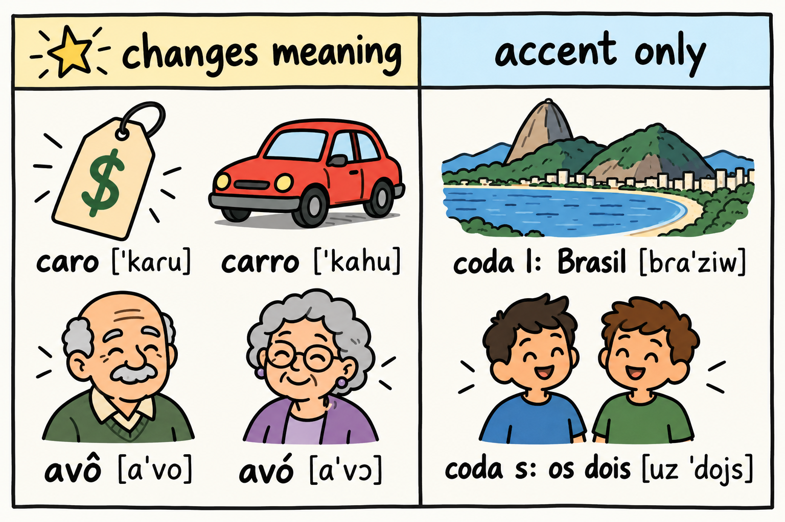
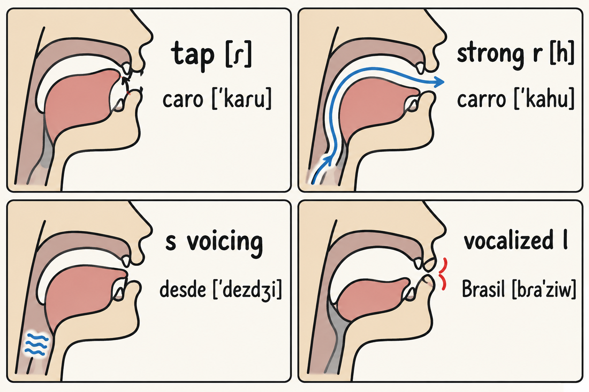

Chapter 3 gave you the contrasts that decide which word your listener has just heard. This chapter gives you the rest of the pronunciation work, and it gives it to you in order. Not every sound deserves the same hour of your week. Some sounds decide meaning. Other sounds decide only that your listener immediately knows you are not Brazilian. Both are worth fixing in time, but they pay differently, and a self-learner with limited hours needs the ranking.
The declared goal of this book is intelligibility: being understood without effort. That is not the same goal as sounding local. Accent, comprehensibility and intelligibility are partially independent of one another [F29], and speech carrying a strong accent can still be highly intelligible [F30]. You can buy full intelligibility without buying a perfect accent. This chapter shows where to spend first.
The sounds in view here are the ones an English speaker typically gets wrong in Brazilian Portuguese: the tap and the strong r, the s in coda, the vocalized l, the palatalized t and d, and the shape of stress and rhythm.
Here is the ranking in one table. The left column is where your hours go first. The right column is where they go once the left column is safe.
| Changes meaning | Accent only |
|---|---|
| The tap [ɾ] against the strong r [h]: caro "expensive" against carro "car" [F17] [F25] [F20] | The s in coda voiced before a voiced sound: os dois, desde [F27] |
| The three contrasts of Chapter 3: aspiration of p, t and k, open and closed mid vowels, nasal vowels | Vocalized l in coda: Brasil, sol [F20] |
| Palatalized t and d before [i], including final -e: cidade, tarde [F20] | |
| Stress placement and the rhythm shape [F28] | |
| The English schwa creeping into pretonic Portuguese vowels (author's suggestion) |
Two honest notes about the table. First, the right column is not optional forever. It is what turns "understood with effort" into "understood without effort", and accent, comprehensibility and intelligibility are only partially independent [F29]. Second, the classification is this book's teaching order, not a claim that any source ranked these features for you. The sources tell us what learners do; the ranking is the book's use of them.

As in Chapter 3, respelling is what you say to yourself and broad IPA in square brackets is what a phonetician would write. All respelling forms here are the author's illustrations, not confirmed dictionary pronunciations.
| Written form | Sounds roughly like | Illustration |
|---|---|---|
| a single r between vowels | a very quick tap of the tongue tip, lighter than the "tt" of American "butter" | caro = KAH-roo [ˈkaɾu] |
| rr, or r at the start of a syllable, or final r | the "h" of "house", in many Brazilian accents | carro = KAH-hoo [ˈkahu] |
| l at the end of a syllable, or final l | the vowel of "food" said right after the main vowel | Brasil = bra-ZEE-oo [bɾaˈziw] |
| t or d before an "ee" sound | "ch" in "church" for t, "j" in "job" for d | cidade = see-DAH-djee [siˈdadʒi] |
| final -e | "ee" in "see" in most of Brazil | tarde = TAR-djee [ˈtaɾdʒi] |
| coda s before a voiced consonant | the "z" of "zero" | os dois = ooz DOYS roughly [uz ˈdojs] |
Keep both systems. The respelling carries you through a phrase at speed; the IPA keeps you honest about what your mouth is doing.

Brazilian Portuguese has two main sounds written with the letter r [F20]. The first is the tap [ɾ], the quick tongue strike you hear in caro "expensive", in para "for", in três "three". The second is the strong r, written rr or written r where a syllable starts with it, as in carro "car", rua "street", and the final r of cantar "to sing". In many Brazilian accents the strong r is a glottal fricative [h], the "h" of "house".
Both of these belong in the "changes meaning" column, because they can separate two words in the ear of your listener. The author's illustration for the pair is caro [ˈkaɾu] "expensive" against carro [ˈkahu] "car". Say them with the key: KAH-roo against KAH-hoo.
What English speakers actually do with these two sounds is documented. For the tap, a study of English speakers producing Brazilian Portuguese reports strategies that include approximants, an l-like quality, epenthesis, that is, adding a vowel, and a trill [F17]. The same body of work notes that the American English flap, the tapped t and d of "butter" and "ladder", is an allophone of t and d in that variety [F17], which is why it becomes a useful bridge for some readers and not for others.
For the strong r, a study of English speakers reports approximants, deletion, and a schwa diphthong in place of the target sound [F25]. That study also reports a deletion rate of 93%, and the exact scope matters: that figure describes the attempts of the English-speaking women who took part in that study, not Brazilian native speakers, and it is not a target or a forecast for you [F25]. It tells you how tempting it is to simply drop the sound. Deletion is not always wrong, though. In the author's observation, which is not sourced, native speakers of Brazilian Portuguese often delete the final r in verb forms in normal use, so a phrase like vou falar with a quiet or absent final r is not an error you need to chase.
One author's suggestion here, with no figure and no source claim. If your English is American, your flap can be a bridge: say "better" and "ladder", feel the quick tap your tongue makes on the t and the d, and use that movement as your model for the Portuguese tap in caro and para. If your English is not American, skip this bridge entirely and use the key instead.
When a syllable ends in s and the next sound is voiced, Brazilian Portuguese voices that s. The spelling does not change. The sound does: os dois "the two" and desde "since" carry a [z] in that position [F27].
This is listed in the accent column, not in the meaning column, because failing to voice it does not create another word. It is still an accent marker, and a stubborn one. A study of English speakers living in Brazil reports that they do not make this assimilation even after more than 10 years in the country [F27]. If you want it, you will have to decide to train it, because exposure alone does not appear to install it.
Author's illustrations for practice: os dois [uz ˈdojs], desde [ˈdezdʒi], and mesmo [ˈmezmʊ] "same". Read them with the key: ooz DOYS roughly, DEZ-djee, MEZ-moo.
One regional note, marked as the author's observation and not as a sourced claim. In Rio de Janeiro and in some accents of the surrounding region, the coda s before a voiceless consonant comes out as a sh-like sound, so mesma can sound close to "meSHma" to an English ear. Wherever you live, learn the voicing pattern first. It is the one that travels.
Two more accent-only features come from the same general description of Brazilian Portuguese phonology, which also records final unstressed vowels, palatalization, epenthesis, the two r sounds and the vocalized l [F20].
The vocalized l is the l after a vowel or at the end of a syllable, which in most of Brazil is not a full l at all: it turns into a vowel-like glide. Brasil is close to bra-ZEE-oo, sol is close to SOH-oo, and mal is close to MAH-oo. Author's illustrations. As an author's suggestion, with no figure and no source claim: in this book the coda l is listed in the accent-only column. It is not in the meaning column, so if your hours are tight, you fix the tap and the strong r before you polish this one.
The palatalization is the t and d before an "ee" sound, which in most of Brazil come out as "ch" and "j". Final -e counts, because it is pronounced "ee" in most of the country, so cidade "city" is close to see-DAH-djee, tarde "afternoon" is close to TAR-djee [ˈtaɾdʒi], and noite "night" is close to NOY-tchee. Author's illustrations again. Final -o does not trigger it: tudo "everything" ends in an "oo" sound, so it stays TOO-doo [ˈtudu], with a plain d. English speakers typically produce a clean t and d here and mark themselves instantly. This is accent-only work, but it is cheap work: the pattern is regular, and once your ear expects "ch" and "j" before "ee", production follows.
One description of Brazilian Portuguese points to stress on the last two syllables and to a high degree of syllable timing, while the rhythm question itself remains debated [F28]. In plain terms: the debate about whether Brazilian Portuguese is syllable-timed is not settled, so this book does not teach you a rhythm rule. It teaches you where the stress of each word you learn sits.
Stress sits in the accent column here, but as the author's observation, with no figure and no source claim, a misstressed word can be harder to recognize, so learn each new word with its stressed syllable marked in your own notes. That habit is the author's suggestion, without any figure and without a source claim.
One more author's suggestion on this page, again with no figure and no source claim. Watch your pretonic vowels. English reduces unstressed vowels toward a neutral schwa, and importing that habit flattens Portuguese vowels that are still distinct. Say the pretonic vowel of caminhada clearly and briefly rather than neutral.
For each sound in this chapter, use the same three-step shape: controlled, semi-controlled, then free. This is the author's training design, not a program taken from a source, and it rests on one solid finding: pronunciation teaching pays off most on specific features and on controlled production [F32]. So you pick one sound, not six, and you work it in a tight loop before you improvise.
Step one, controlled. Take three or four words from the key with the target sound and nothing else competing. Say them slowly, checking the respelling and the IPA. If the sound is the tap, say caro, para, três and hold the light tongue strike.
Step two, semi-controlled. Put those words into short phrases where you supply the surrounding words. "Para mim", "três reais", "o carro é novo". The target sound is still predictable, but the phrase is yours.
Step three, free. Say something you actually want to say, at conversational speed, with the target sound somewhere inside. This is where you find out whether the sound survives a real sentence. A short recording of yourself is enough.
Before any of these production steps, do the listening step, and do it first. A meta-analysis of high variability phonetic training, the method where one contrast is repeated in several different voices, reports clear gains in perception, with effect sizes of g = 0.92 and g = 0.67 [F34]. When the same training is measured for production, the gains are smaller and are retained less well, reported as 10.5% and 4.5% in that meta-analysis [F33]. That is the same pattern as in Chapter 3: the ear improves reliably, the mouth needs repetition.
The several voices have to come from real Brazilian speakers in whatever recordings you choose to use. This book gives you transcription and respelling only; there are no audio files and no QR codes here.
For listening at lower levels, add shadowing. A study of shadowing reports that it helps listening at lower levels and that the benefit reaches a plateau [F35]. So shadow early in your study, and do not expect it to keep paying forever on its own.
If your English is British, Australian, New Zealand or South African English, you are non-rhotic: the r after a vowel is not a full consonant in your accent. Three notes for this chapter.
First, no flap bridge. The "better" and "ladder" tap belongs to American English. As a non-rhotic speaker you do not have it, so skip that suggestion and use the respelling key and the IPA instead. Your job is to build the movement from scratch rather than to transfer it.
Second, the coda r, as the author's observation. Your variety can produce an audible r in some connected positions, the linking r of "far away", and that is not the Brazilian tap. The Brazilian tap is one quick strike in the middle of a word such as caro. Do not treat your careful-speech r as the model for it.
Third, the vowels, as the author's suggestion. Your "law" vowel can anchor the open o [ɔ] of Portuguese. Your "go" and "day" vowels glide, so when you produce the Portuguese closed o [o] and closed e [e], strip the movement out. In both varieties, keep the English schwa out of pretonic Portuguese vowels: Portuguese keeps those vowels distinct even when they are short.
Spanish changes this chapter in a specific way: it gives you several of these sounds already, and it gives you one habit that works against you. Keep in view that English-Spanish bilinguals depend on Spanish when learning Portuguese, whatever the order in which they acquired their languages [F62], and that this dependence is material you manage rather than a defect.
Three traps are relevant to the sounds of this chapter. The first is sourced; the other two are the author's observations, not sourced claims.
Practice suggestion: the full-stop drill. In Portuguese, produce b, d and g as real stops, with a complete closure and a clean release, especially between vowels. Say these author's illustrations slowly and keep the consonant hard rather than soft:
Put each word into a short phrase of your own, then say the phrase at conversational speed without letting the consonant soften.
One vocabulary warning that belongs only in this box. In informal Brazilian usage, "propina" means a bribe [F48]. That the Spanish word means a tip left for service is the author's observation, so the same word can land very badly in conversation. Chapter 8 builds a full track for readers who already speak Spanish; this box only covers the sounds.
If you keep one idea from this chapter, keep the ranking. The tap against the strong r changes meaning, so it outranks the accent-only features and it goes first. Then work the s voicing before voiced sounds, because exposure does not install it for English speakers [F27]. Then the vocalized l, the palatalized t and d, and the stress of each new word you learn.
Use the three-step shape for each sound: controlled, semi-controlled, free, because pronunciation teaching pays on specific features and controlled production [F32]. Listen before you speak, since perception training is where the reliable gain is [F34] and production gains are smaller and less retained [F33]. Shadow for your listening at lower levels [F35]. The goal is not a perfect accent. The goal is speech that is understood without effort, since accent, comprehensibility and intelligibility are only partially independent [F29], and a strong accent can still be fully intelligible [F30].
Retrieving what you just read is what makes it stick: a meta-analysis of the testing effect compares testing with restudy [F94]. Answer from memory first, then check.
As the author's suggestion, here is a simple calendar for this chapter. Read it once today, then come back on these days:
On each return, run the self-test from memory before you reread anything, then reread only the parts you missed. These review points are the author's adaptation of the interval idea in a spacing study [F90], which measured a single gap between two study sessions. That source did not test this calendar, and the days above are a suggestion, not a result reported by that study. Adjust the timing to your own week if you need to; the habit of returning and retrieving matters more than the exact day.